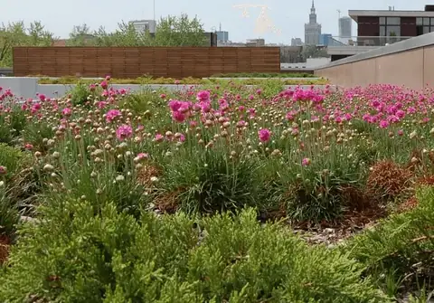
Dachy ekstensywne
Lekkie, prawie bezobsługowe pokrycia z rozchodników, ziół i traw na dachach płaskich i skośnych.
- Rozchodniki na dachu
- Łąka na dachu
- Alejka na dachu
- Dach lekki
- Dach ciężki (balastowy)
- Dach spadzisty, skośny
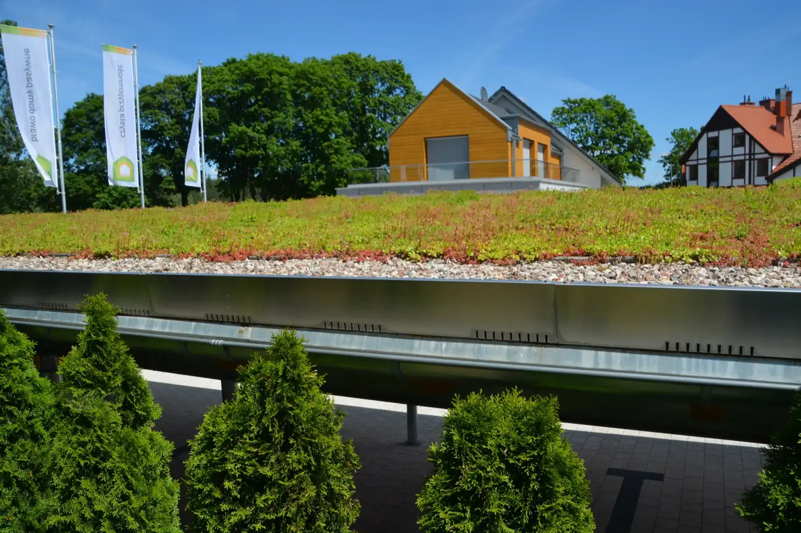
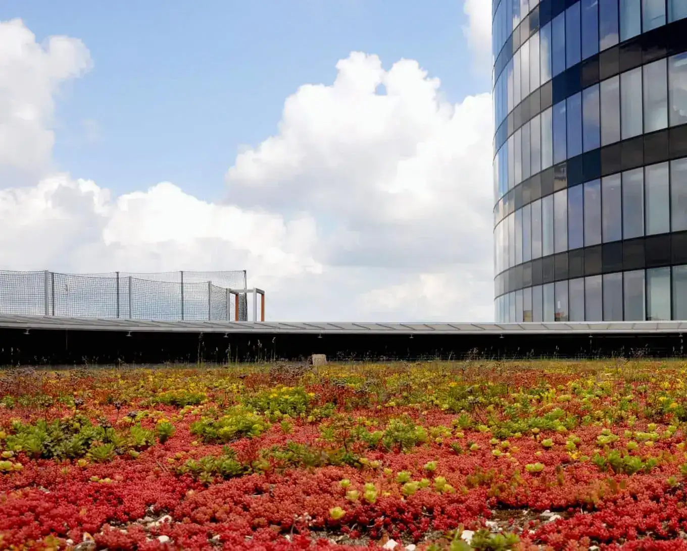
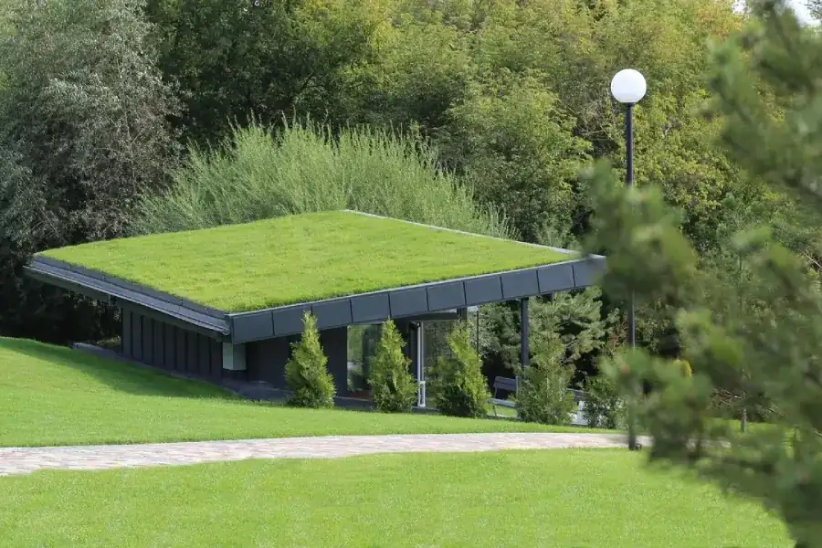
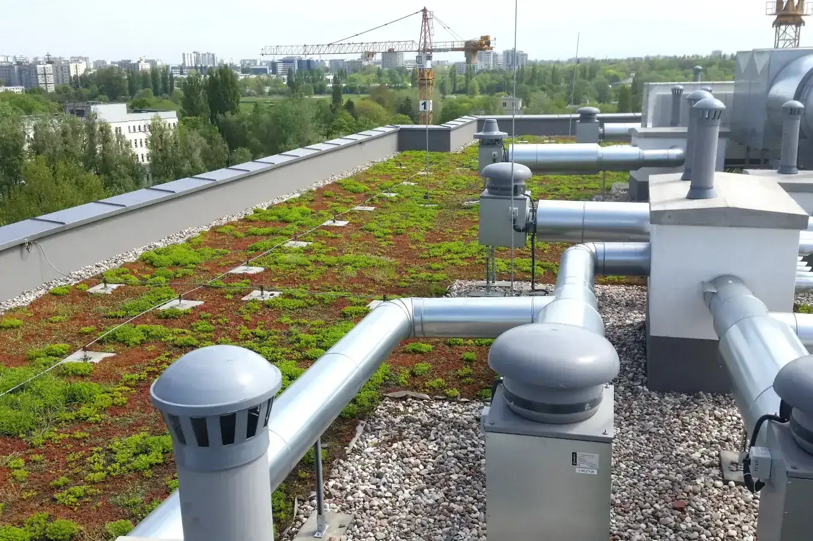
Producent substratów dachowych SPG i dostawca materiałów zgodnych z Wytycznymi FLL. Każde rozwiązanie sprawdzamy na stanowiskach pokazowych w Słupnie k. Warszawy.
Substraty produkujemy sami, w zakładzie w Słupnie, z lokalnych surowców i materiałów z recyklingu. Pozostałe warstwy to certyfikowane produkty zgodne z Wytycznymi FLL. Dobieramy je do konstrukcji dachu i rodzaju zieleni: od lekkiego dachu ekstensywnego po ogród nad parkingiem podziemnym.
Kliknij warstwę przekroju, żeby przejść do produktów.
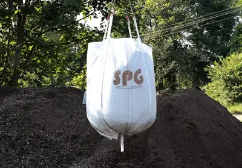
Mineralno-organiczne, produkowane zgodnie z Wytycznymi FLL: ekstensywne, intensywne, drenażowe i trawnikowe, także lekkie i o zminimalizowanym odcieku fosforanów.
6 produktów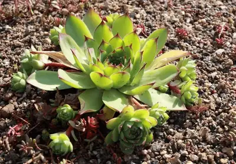
Mieszanki nasion łąki kwietnej, pędy rozchodników, sadzonki w multiplatach i maty wegetacyjne.
6 produktów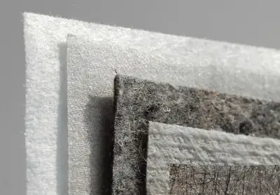
Filtracyjne, dyfuzyjne, chłonno-ochronne i przeciwkorzeniowe, w tym DuPont Plantex Root Protector.
13 produktówSystemowe maty drenażowe i retencyjne oraz kruszywa drenażowe o różnej wysokości, wytrzymałości i pojemności wodnej.
10 produktów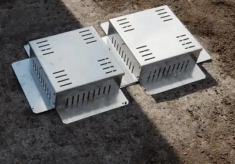
Elementy odwodnienia i separacji: skrzynki SKN i SKA, obrzeża CC, kątownik perforowany KFR.
5 produktów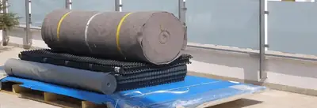
Wełna skalna HWS na dachy lekkie i spadziste oraz folia przeciwkorzeniowa PE LD zgodna z FLL.
3 produkty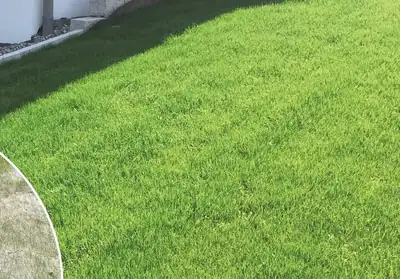
Włókniny z nasionami do zakładania trawników i łąk kwietnych na dachu i na gruncie.
ZobaczMateriały w PDF dla projektantów, wykonawców i inwestorów.
Gotowe układy materiałowe z przekrojami i rysunkami technicznymi, od dachu lekkiego po wodę na stropie.

Lekkie, prawie bezobsługowe pokrycia z rozchodników, ziół i traw na dachach płaskich i skośnych.
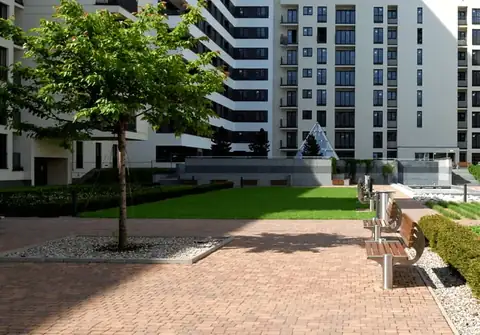
Ogrody, trawniki, chodniki i drogi na stropach, także nad parkingami podziemnymi.
W zakładzie produkcyjnym w Słupnie prowadzimy stanowiska doświadczalno-pokazowe, na których monitorujemy nasze rozwiązania. Szkolimy, konsultujemy i doradzamy na etapie projektu i realizacji.
„Zapraszamy do naszego zakładu, gdzie można z bliska obejrzeć dachy zielone na stanowiskach pokazowych, wypić dobrą kawę oraz zasięgnąć bezpłatnej porady technicznej.”Umów wizytę w Słupnie
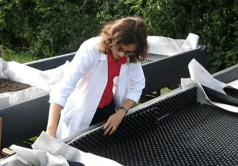
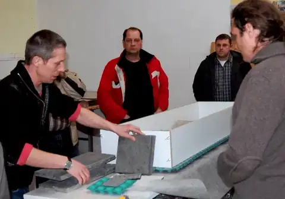
Dachy i stropy wykonane na naszych materiałach. Kliknij zdjęcie, żeby je powiększyć.
Stawiając na dachy zielone, dbamy nie tylko o estetykę, ale przede wszystkim o środowisko i koszty użytkowania budynku.
Piszemy o tym, o co najczęściej pytają projektanci, wykonawcy i inwestorzy.
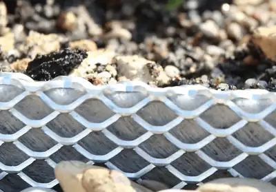
Kątowniki służą do krawędziowego odwadniania i separacji materiałów na dachu.
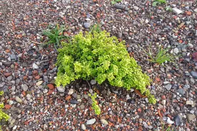
Podłoże dla mchów, ziół, rozchodników i traw sucholubnych.
Dach zielony to urządzenie hydrotechniczne: ile wody zatrzymać, a ile odprowadzić.
Porady, przekroje i odpowiedzi na pytania klientów.
Wszystkie wpisyPrześlij projekt albo opis inwestycji, a dobierzemy materiały i przygotujemy ofertę.
Laboratorium Dachów ZielonychBiuro i zakład produkcyjny
ul. Ceglana 2B, 05-250 Słupno, gm. Radzymin k. Warszawy
tel. 22 760 05 55 · NIP 762-100-76-57